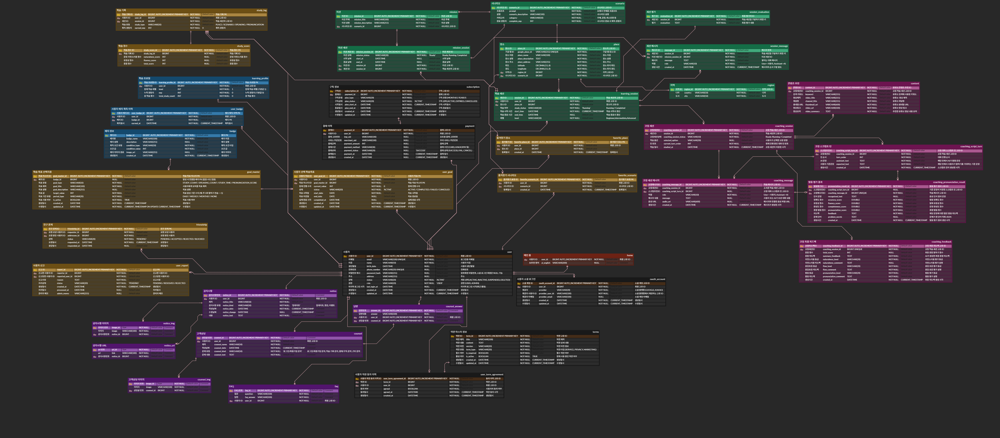

지도 학습 메인
구글 맵 API를 활용한 영어 학습 서비스, 사용자 개별 학습 세션 구분, 진행 상태 저장, 실시간 채팅 학습 기능을 구현했습니다.
Mini Project
위치 기반 영어 학습 서비스

Design Assets

사용자 요청이 애플리케이션 서버와 데이터베이스로 이어지는 배포 구성을 정리합니다.

비회원, 회원, 관리자가 수행하는 기능과 접근 가능한 범위를 구분합니다.

회원, 게시글, 댓글, 첨부파일의 관계와 삭제 정책을 함께 정리합니다.
Features
구글 맵 API를 활용한 영어 학습 서비스, 사용자 개별 학습 세션 구분, 진행 상태 저장, 실시간 채팅 학습 기능을 구현했습니다.

장소 상세 내용 조회를 구현하고, 장소의 시나리오 레벨 선택 및 메인 학습 진행을 위한 접근을 구현했습니다.

미션을 따라서 사용자가 자연스럽게 학습할 수 있도록 구현했고, 미션을 다 종료하면 최종 평가를 받아 개선점도 확인할 수 있습니다.

실제 사용자가 학습할 장소, 시나리오, 미션, 지역 CRUD 기능을 구현했습니다.
Architecture Notes
지도 기반 학습 기능은 단순히 장소를 조회하는 기능이 아니라 로그인 상태, 학습 세션, 미션 진행, AI 대화, 학습 완료 여부가 함께 연결됩니다. 각 기능의 책임을 분리하고 상태가 일관되게 유지되도록 설계하는 데 중점을 두었습니다.
장소(Place), 장소 학습(PlaceLearning), 미션(Mission), 시나리오(Scenario), 지역(Region)을 각각 독립된 도메인으로 분리했습니다. Controller는 요청과 응답만 처리하고, Service에서 학습 진행 규칙과 상태 변경을 담당하도록 구성하여 기능 변경 시 영향 범위를 최소화했습니다.
학습 세션 생성, 미션 시작·완료, AI 대화 기록을 각각 관리하고, 지도 조회 시 로그인 사용자의 학습 상태를 함께 조회하여 완료된 장소는 체크 마커로 표시하도록 구현했습니다. 상태 변경 후에는 마커 데이터를 다시 조회하여 화면과 데이터의 일관성을 유지했습니다.
학습 세션 생성과 미션 진행은 로그인 사용자만 가능하도록 구성했으며, JWT에서 사용자 정보를 조회하여 자신의 학습 기록만 조회할 수 있도록 구현했습니다. 인증과 비즈니스 로직을 분리하여 유지보수가 쉽도록 설계했습니다.
미션 완료 후 학습 상태가 변경되면 마커 목록을 다시 조회하여 완료 마커가 즉시 반영되도록 구현했습니다. 서버 데이터와 프론트엔드 상태가 불일치하지 않도록 데이터 갱신 시점을 명확하게 관리했습니다.
Verification
01 / Authentication
JWT 기반 로그인과 로그아웃을 구현하고, 인증된 사용자만 학습 세션 생성과 미션 진행이 가능하도록 구성했습니다. 로그인 상태에 따라 지도 학습 진입, AI 대화, 학습 진행 기능의 접근을 제어하여 사용자별 학습 데이터를 안전하게 관리했습니다.

02 / LEARNING FLOW
학습 세션 생성, 미션 시작, 미션 완료 순서에 따라 사용할 수 있는 기능을 구분했습니다. 이미 완료한 미션은 다시 완료할 수 없도록 처리하고, 학습 상태에 따라 지도 마커와 화면 UI가 일관되게 변경되도록 구현했습니다.

03 / AI CONVERSATION
사용자의 입력을 AI 서비스로 전달하고, 응답 결과를 학습 세션에 저장하도록 구현했습니다. 미션 진행 상태와 채팅 횟수를 함께 관리하여 비정상적인 요청을 방지하고, 학습 흐름이 끊기지 않도록 설계했습니다.